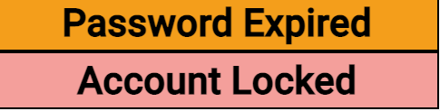

Select Employee To Edit
(Site Scheduler/Leadership only)
-
List Hightlights: I wanted to point out two areas besides the list
of employees to edit.
-
First, the "Show Active Only" checkbox provides a way to limit the
list to only current employees. Unchecking the checkbox will change
the list to display anyone in the database who had been assigned to
your site.

-
Next, Below the "Show Active Only" is two items: "Password Expired"
and "Account Locked". These are the color coding schemes for the list
to show employee's whose accounts are either locked or their password
is expired. The employee's profile view will allow you to change
their password (if expired) or to unlock their account (if locked).
-
Selecting one of the employees in the list will cause that employee's
information to the editor views to allow it to be edited. This includes:
personal and company information, assign primary labor codes, work
assignments, work variations, view PTO/Holiday displays, edit leave
manually, leave balances, and leave requests. Each of these views will
be discussed on subsequent help pages.
Add New Employee
Site Employee Profile